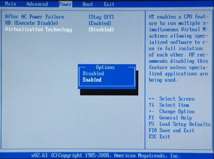
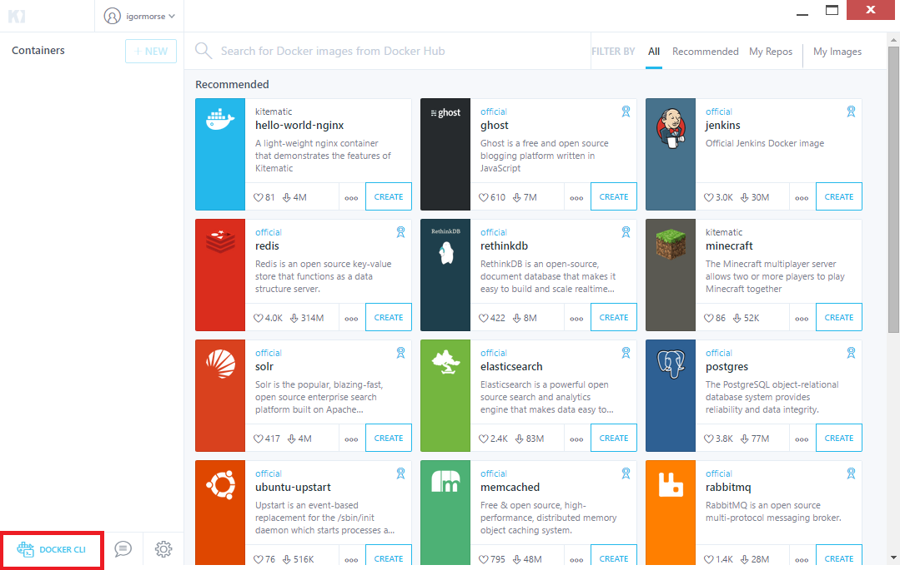

Instalando e Configurando o Docker¶
Pré-requesitos¶
ANTES DE CONTINUAR Verifique se a virtualização está habilitada na BIOS
Desative o Hyper-V no Windows

Baixe a versão do ToolBox para seu sistema operacional e prossiga normalmente instalando todos os utilitários que este pacote oferece.

Instalando o Docker¶
Após a instalação do ToolBox, você deverá conter em sua máquina as seguintes Aplicações: Docker, VirtualBox, Kinematic e o GIT.
Atualize o VirtualBox se necessário ou se desejar, a versão que acompanha o ToolKit funciona perfeitamente.
Prosseguiremos com a Instalação e Configuração do Container, que é basicamente nossa área de desenvolvimento, nos seguintes passos:
Kinematic
Assim, que completar a instalação, execute o Kinematic. Após isso, clique na opção de executar com o Virtual Box/VM. Ele irá iniciar o processo de criação de uma VM, pode ser que demore um pouco!

Configurando o Docker¶
Após isso, será necessário que configuremos a porta USB que será utilizada para o flash do ESP8266.
Conecte na USB seu ESP8266. Verifique se o Windows detectou corretamente seu ESP em Gerenciador de Dispositivos, ele deverá aparecer na parte de Portas COM.
Nota
É obrigatório possuir um ESP8266 conectado na USB antes de iniciar o Container, caso contrário não irá funcionar.
VirtualBox
Abra o Virtual Box, deverá ter uma máquina virtual chamada default. É por meio desta que o nosso docker funciona.
É obrigatório possuir um ESP8266 conectado na USB antes de iniciar o Container, caso contrário não irá funcionar.
Nota
Precisamos emular nosso dispositivo USB ( ESP8266 ) para dentro do Docker e iremos fazer isso através do VirtualBox mas para isso precisaremos parar a VM que está rodando, há duas maneiras de fazer isso:
- Via Comando ( Recomendado )
- Apertando botão direito na VM e realizar o desligamento. ( Não Recomendado )
Para desligar a VM via Comando, retorne ao Kinematic ( Aberto anteriormente ) e clique em Docker CLI, como mostra a figura abaixo:
O PowerShell ( Windows 10 ) ou CMD irá abrir.
Nota
Digite o seguinte comando para parar a Maquina Virtual:
- docker-machine stop
Nota
Após parar a VM, volte ao VirtualBox, abra a configuração da VM default e realize a emulação do USB onde seu ESP8266 está localizado, como mostra a figura abaixo:
- Clique no USB com um + e selecione o dispositivo USB que corresponde ao seu ESP.
Nota
Retorne ao PowerShell ou CMD e digite o seguinte comando para religar a Maquina Virtual:
- docker-machine start
Note que caso você queira desligar/religar o ambiente de desenvolvimento, os mesmos comandos do docker-machine start/stop deverão utilizados.
Última Etapa
Não iremos mais utilizar o VirtualBox, portanto pode ser fechado. A partir dessa etapa, apenas o Docker CLI e o Kinematic são utilizados.
Crie uma pasta no seguinte caminho C:UsersSeuNomesming. ( Pasta que será compartilhada com o Container )
Atenção ao nome da pasta, o comando abaixo está configurado para funcionar somente com esse nome de pasta.
Nota
Seguindo todos esses passos, digite o último comando no PowerShell ou CMD:
- docker pull automacaoiot/esp8266-sdk ; docker run -it -d -p 8181:80 -p 8122:22 -p 4075:4075 –device=//dev/ttyUSB0 -v /c/Users/$env:username/sming/:/workspace/shared-workspace/ automacaoiot/esp8266-sdk

Após isso, seu Container já estará pronto e configurado para uso. Agora é apenas programar !
Nota
Caso queira mudar a localização da pasta compartilhada, é só mudar o caminho no comando que está descrito em:
- /c/Users/$env:username/sming/
Abrindo no Navegador
Ainda no Kinematic, note que apareceu um Container, de nome aleatório, clique nele e selecione Web Preview ao lado.
Observações
O Container só será inicializado ( Supondo que você tenha desligado e religado o computador ), caso o ESP8266 esteja conectado na USB. Após conectar é só apertar START no Kinematic. Após iniciar o Container, é possível desconectar e conectar o ESP8266 da porta USB quantas vezes for necessário ou, supondo que você possua vários ESPs de mesmo modelo, trocar de dispositivo.